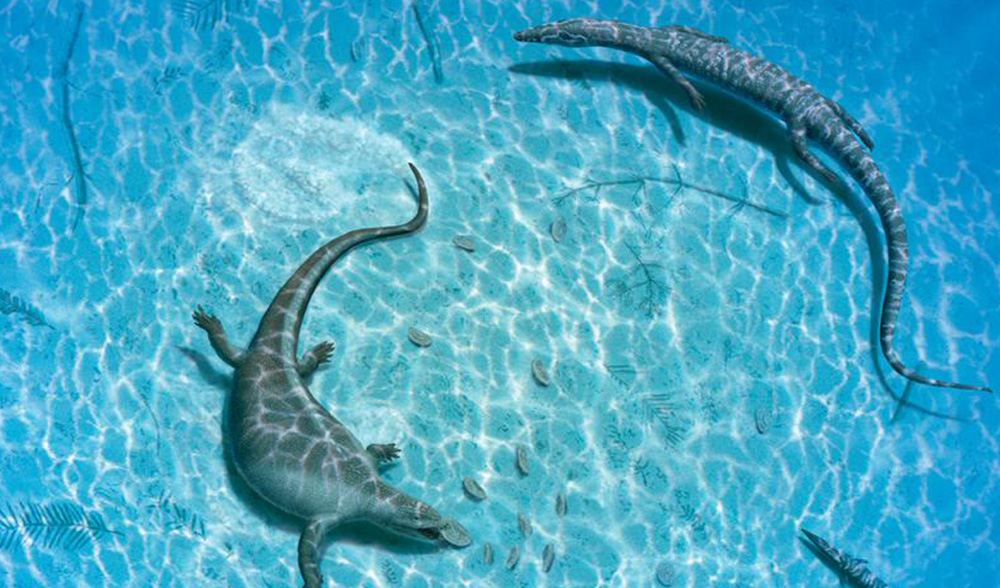
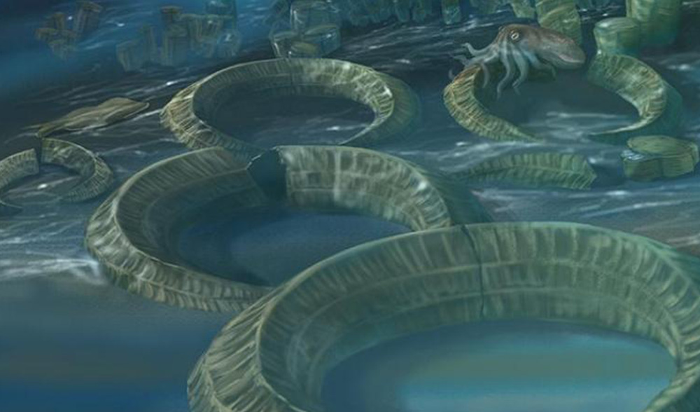
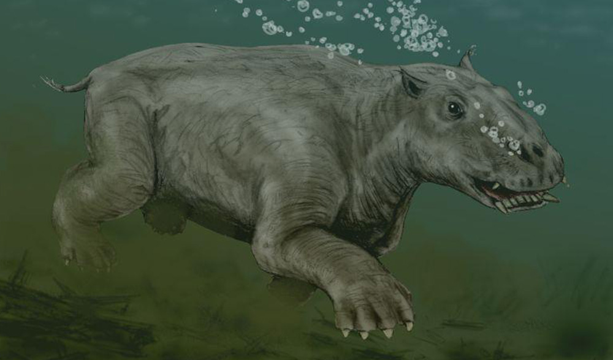

Reptiles Of The Sea
Before large mammals, reptiles ruled the ocean. During the Mesozoic, the time period when dinosaurs roamed on land, many of these large creatures were the top predators in the ocean food chain and fed on fish, cephalopods, bivalves, and even one another. The most notable of these reptiles were the ichthyosaurs, plesiosaurs, mosasaurs, and sea turtles. Although they lived at a similar time as dinosaurs, marine reptiles were not dinosaurs since they evolved from a different ancestor. In fact, many of the reptiles in the ocean were only distantly related to one another. While the mosasaurs evolved from land-dwelling lizards, plesiosaurs, ichthyosaurs, and turtles each had their own separate evolutionary lineage.

Ancient Reef
At the beginning of the Mesozoic Era during the Triassic, the ocean’s reefs were hard hit by the Permian extinction. It took millions of years for new, diverse seafloor ecosystems to evolve. By the time of the Jurassic, the seafloor was again thriving, but the reef's composition was different than the reefs we think of today. Presently, corals are the famous creatures known for their reef-building. They were also fairly abundant at various times through the Paleozoic Era and formed extensive reefs by the Devonian Period. But about 100 million years ago, during the heyday of the dinosaurs, the majority of reefs were built by mollusks called rudist clams. Like modern clams, rudists were bivalves.

The Reign Of Mammals
It is also during this time that the true giants of the world came to be. The largest animal to ever live on the planet is the blue whale. But to become so large required a special set of circumstances. Baleen whales didn’t begin to get really big until roughly 5.3 million years ago, at the transition between the Miocene and the Pliocene. Scientists believe that this was a response to changes in the ocean environment. Around 3 million years ago the poles and temperate latitudes of the Earth were covered in ice.